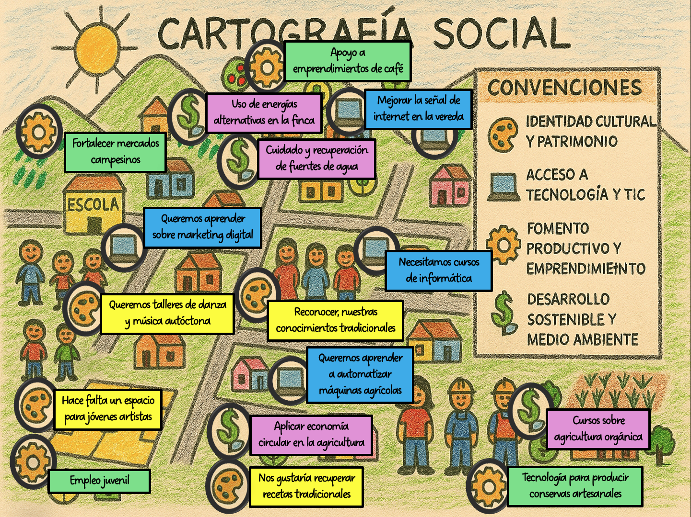
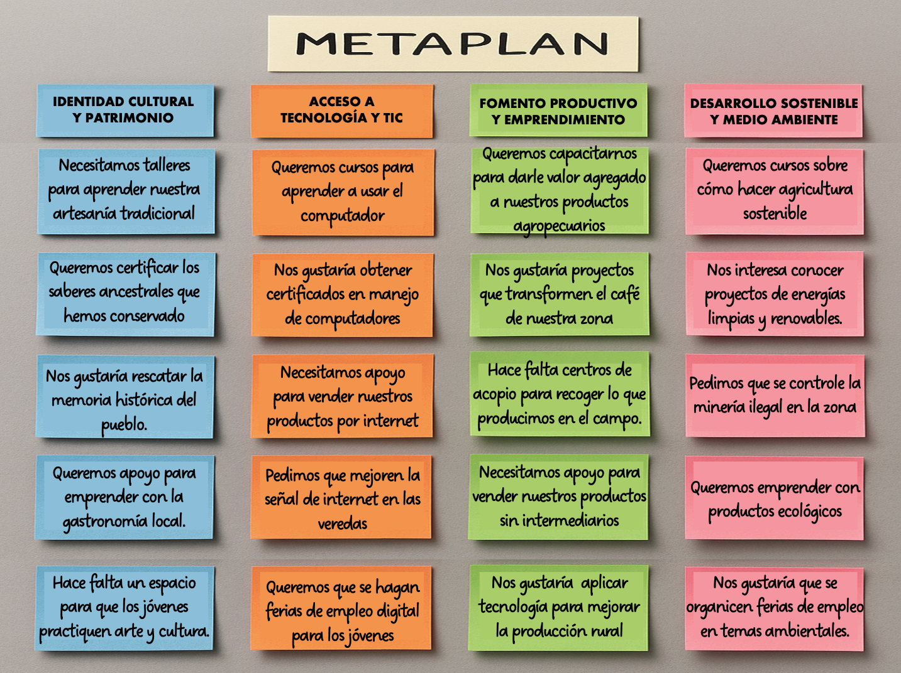
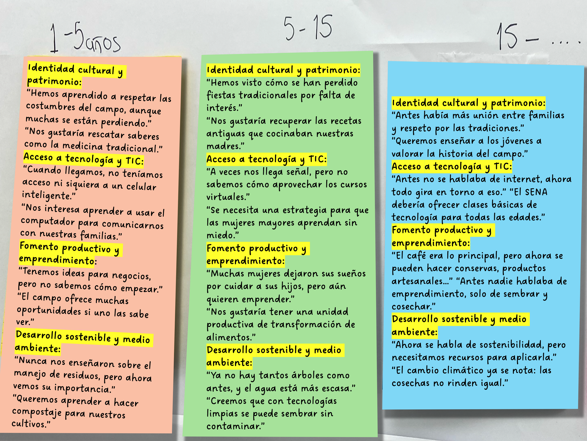
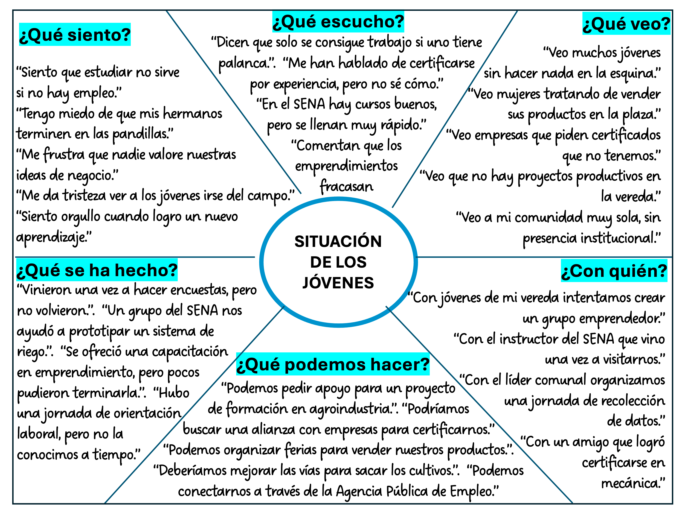

📘 Guía de Instrumentos Participativos
🎯 ¿Qué es esta guía?
Esta guía articula seis instrumentos participativos con un flujo de tres matrices (DOFA → Priorización → Perfilamiento) y una app que convierte fotografías y textos en datos estructurados usando IA.
🔹 Los seis instrumentos
| Instrumento | Entrada | Dimensión |
|---|---|---|
| 🗺️ Cartografía social | Foto del mapa | Espacial y relacional |
| 🟩 Metaplan | Foto del tablero | Categorizado y priorizado |
| 📖 Historias de vida | Foto de paneles | Narrativo y temporal |
| 🧠 Mapa de empatía | Foto del diagrama | Subjetivo y emocional |
| 📓 Diario de campo | Foto y/o texto | Cronológico y observacional |
| 🎙️ Entrevista semi-estructurada | Foto y/o texto | Temático y testimonial |
⚖️ ¿Cuál instrumento usar y cuándo?
| Si el contexto es... | Instrumento recomendado | ¿Por qué? |
|---|---|---|
| Rural, con territorio amplio | Cartografía social | Permite ubicar problemas y recursos |
| Urbano, con muchas voces | Metaplan | Ordena y prioriza la diversidad |
| Comunidad con memoria viva | Historias de vida | Recupera el tiempo y el saber ancestral |
| Jóvenes, temas emocionales | Mapa de empatía | Conecta con la subjetividad |
| Práctica profesional o intervención | Diario de campo | Registra sistemáticamente el proceso |
| Captar experiencias individuales | Entrevista semi-estructurada | Profundiza en significados y emociones |
📋 Protocolo de aplicación en territorio
🔹 ANTES
- Contactar líderes comunitarios
- Explicar el objetivo y pedir consentimiento
- Definir lugar, hora y materiales
- Preparar convenciones (si es cartografía)
🔹 DURANTE
- Presentación del equipo y del ejercicio
- Explicar reglas (una idea por tarjeta, respeto, etc.)
- Facilitar la participación equitativa
- Registrar TODO (fotos, audio, notas)
- Cerrar con síntesis colectiva
🔹 DESPUÉS
- Agradecer y dejar claro qué sigue
- Fotografiar el resultado final (con buena luz y encuadre)
- Digitalizar en la app el mismo día
- Escribir notas de contexto
📸 Protocolo de captura fotográfica
| Regla | Por qué |
|---|---|
| Buena luz (natural, sin sombras) | Para que la IA pueda leer el texto |
| Encuadre completo | Que se vea todo el instrumento |
| Sin ángulos extremos | De frente, perpendicular |
| Texto legible | Que las letras se vean nítidas |
| Foto por zonas | Además de la general, tomas cercanas por sección |
| Etiquetar antes de subir | Indicar instrumento, territorio, fecha |
👥 Recomendaciones por tipo de población
| Población | Recomendaciones |
|---|---|
| Jóvenes | Usar mapa de empatía y TIC; lenguaje cercano; dinámicas lúdicas |
| Mujeres | Historias de vida y cartografía; espacios seguros |
| Adultos mayores | Historias de vida; respetar tiempos; valorar saberes ancestrales |
| Comunidades rurales | Cartografía social; lenguaje sencillo |
| Comunidades urbanas | Metaplan y mapa de empatía |
| Población vulnerable | Consentimiento reforzado; cuidado ético |
⚠️ Errores comunes y cómo evitarlos
| Error | Cómo evitarlo |
|---|---|
| Instructor impone temas | Facilitar, no dirigir |
| No se registra el debate | Grabar o tomar notas del proceso |
| Fotos borrosas | Protocolo de captura |
| No hay consentimiento | Formato de consentimiento informado |
| Se aplica un solo instrumento | Aplicar al menos dos complementarios |
| No se etiqueta la información | Usar categorías y tipo de dato desde el inicio |
🗺️ Cartografía Social

Representación colectiva del territorio donde la comunidad ubica problemas, recursos, actores y relaciones. Las convenciones las define la comunidad en territorio.
🔹 Elementos del instrumento
- Cuadro de convenciones (íconos → categorías, definido por la comunidad).
- Mapa del territorio (dibujo colectivo del espacio).
- Post-its o etiquetas con problemas, recursos, demandas.
- Íconos temáticos (paleta, monitor, engranaje, signo $, etc.).
- Ubicación espacial de cada post-it (arriba, abajo, izquierda, derecha, centro).
- Actores dibujados o mencionados (personas, instituciones, grupos).
🧩 Cómo se sistematiza
- Se lee PRIMERO el cuadro de convenciones para decodificar los íconos.
- Cada post-it → texto + ícono + categoría + ubicación espacial.
- Si no hay cuadro explícito, la IA sugiere convenciones por color o asociación.
- Se genera el mapa de actores a partir de lo dibujado y lo mencionado.
- Se produce un resumen narrativo que recorre cada categoría.
- Se genera DOFA (regla interno/externo), estrategias emergentes y macroestrategias.
- El instructor puede validar y ajustar en cualquier momento.
🟩 Metaplan

Técnica de visualización y agrupación colectiva de ideas en tarjetas. Las categorías las define la comunidad.
🔹 Elementos del instrumento
- Columnas temáticas con títulos definidos por la comunidad.
- Tarjetas o post-its con una idea por tarjeta.
- Orden de las tarjetas dentro de cada columna (de arriba hacia abajo).
- Categoría asociada a cada columna.
- Agrupación por afinidad temática (no por quién lo dijo).
- Votación opcional para priorizar tarjetas.
🧩 Cómo se sistematiza
- Se leen los títulos de las columnas tal como aparecen (no se imponen categorías universales).
- Cada tarjeta → texto + columna + orden dentro de la columna.
- Se respeta el orden visual de las columnas (izquierda → derecha).
- El resumen narrativo nombra cada categoría EXACTAMENTE y parafrasea las tarjetas.
- Los colores de los post-its no son obligatorios (solo si el territorio los definió).
- Se genera DOFA, mapa de actores, estrategias emergentes y macroestrategias.
📖 Historias de Vida

Relatos organizados por rangos temporales que permiten recuperar memoria, percepciones y cambios en el tiempo. Los rangos y ejes los define la comunidad.
🔹 Elementos del instrumento
- Rangos temporales (pueden ser años, décadas, hitos o categorías cualitativas).
- Ejes temáticos dentro de cada rango (identidad, TIC, fomento, sostenibilidad u otros).
- Citas textuales de los participantes (entre comillas).
- Evolución entre rangos (antes / ahora / deseos futuros).
- Cantidad variable de rangos y ejes (no siempre son 3 ni 4).
🧩 Cómo se sistematiza
- Se leen los rangos temporales tal como aparecen (no se asume 3 rangos de 5 años).
- Se leen los ejes temáticos dentro de cada rango (no se imponen los 4 estándar).
- Cada cita → rango + eje + texto.
- Se genera una matriz rango × eje que muestra la evolución.
- El resumen narrativo recorre cada rango y dentro cada eje (parafraseando).
- Se respeta el orden visual de los paneles (izquierda → derecha).
- Se genera DOFA, mapa de actores, estrategias y macroestrategias.
🧠 Mapa de Empatía

Diagrama radial que organiza lo que un sujeto siente, ve, escucha, dice y hace. El sujeto y las secciones los define la comunidad.
🔹 Elementos del instrumento
- Sujeto del mapa al centro (jóvenes, mujeres, comunidad, etc.).
- Secciones del diagrama (¿Qué siento?, ¿Qué escucho?, ¿Qué veo?, ¿Qué se ha hecho?, ¿Con quién?, ¿Qué podemos hacer?).
- Frases textuales en cada sección (con comillas).
- Carga emocional de cada frase (positiva, negativa, neutra).
- Cantidad variable de secciones (no siempre son 6).
- Análisis emocional agregado (positivas vs. negativas por sección).
🧩 Cómo se sistematiza
- Se lee el sujeto del centro del diagrama (no se asume que son jóvenes).
- Se leen las secciones tal como aparecen (no se asume que son 6).
- Se respeta el orden visual de las secciones.
- Cada frase → sección + texto + carga emocional (positiva/negativa/neutra).
- Se genera un análisis emocional agregado (positivas vs. negativas por sección, tensiones).
- El resumen narrativo recorre cada sección parafraseando las frases.
- Se genera DOFA, mapa de actores, estrategias y macroestrategias.
📓 Diario de Campo
Instrumento metodológico y de investigación que permite registrar de manera sistemática, cronológica y reflexiva las observaciones, interacciones, experiencias y datos recabados durante la intervención profesional o el trabajo comunitario.
🔹 Elementos de cada entrada
- Fecha y lugar de la sesión o visita.
- Hora de inicio y término (opcional).
- Actividad realizada.
- Responsable(s) de la sesión.
- Objetivo de la actividad.
- Desarrollo de la práctica (descripción de lo que pasó).
- Aprendizajes (qué se aprendió).
- Dificultades (qué fue difícil).
- Notas (observaciones, plan de acción, tareas pendientes).
- Firma (opcional).
🧩 Cómo se sistematiza
- Se identifican las entradas por fecha y lugar (orden cronológico).
- Cada entrada → actividad, objetivo, desarrollo, aprendizajes, dificultades, notas.
- Se detectan patrones recurrentes entre entradas (dificultades que se repiten, aprendizajes que evolucionan).
- Se identifican categorías emergentes (temas recurrentes en el tiempo).
- Se clasifica la carga emocional de cada entrada (positiva, negativa, mixta).
- El resumen narrativo recorre las entradas en orden cronológico.
- Se genera DOFA, mapa de actores, estrategias y macroestrategias.
🎙️ Entrevista Semi-estructurada
Conversación guiada por un guion abierto organizado por categorías temáticas. El entrevistador puede profundizar, reformular o incluir preguntas nuevas según el flujo de la conversación.
🔹 Elementos del instrumento
- Perfil del entrevistado (edad, rol, trayectoria, etc.).
- Guion temático (categorías amplias, no preguntas cerradas).
- Preguntas flexibles que pueden reformularse o profundizarse.
- Temas emergentes que aparecen sin estar en el guion.
- Citas textuales (la voz del entrevistado importa).
- Carga emocional de cada fragmento (positiva, negativa, mixta).
🧩 Cómo se sistematiza
- Se identifica al entrevistado y su perfil (si está disponible).
- Se detecta el guion temático (si está explícito) y los temas emergentes.
- Los fragmentos se agrupan por tema, no por pregunta.
- Las citas se conservan textuales (entre comillas) para que el instructor pueda validarlas.
- Se clasifica la carga emocional de cada fragmento.
- El resumen narrativo recorre los temas emergentes parafraseando.
- Se genera DOFA, mapa de actores, estrategias y macroestrategias.
📤 Procesar instrumento con IA
📊 Flujo de las tres matrices
🔹 MATRIZ 1: DOFA
Fortalezas y Debilidades son internas. Oportunidades y Amenazas son externas. Incluye lectura estratégica por cuadrante.
🔹 MATRIZ 2: PRIORIZACIÓN
IMPORTANTE = No misional (lo asume otra entidad)
🔹 MATRIZ 3: PERFILAMIENTO
QUÉ – CÓMO – CUÁNDO – QUIÉN – DÓNDE